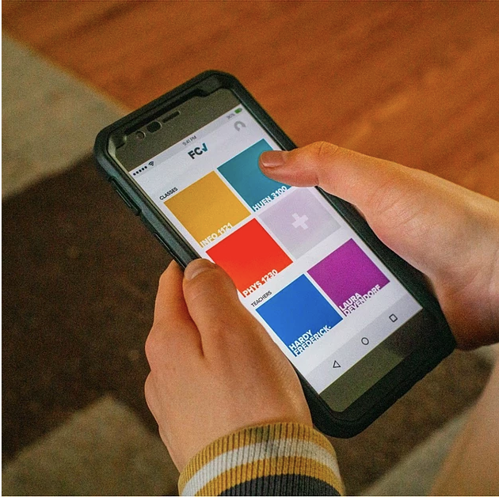

The below are my experience of the course projects I have did before. Most of my skills were gained from these projects, involving quantative data analysis, user experience research, and design.

Prototyped a data-based classroom experience application
Designed an application that uses data tracking to help both teachers and students have better classroom experience
Obtained undergraduate students’ suggestions on the current classroom feedback system FCQ in CU Boulder by conducting interviews and surveys
Prototyped four key tasks of this app that can be operated on Adobe XD